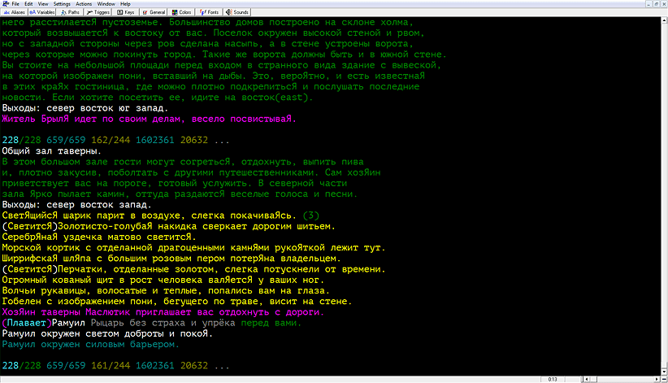

Юрий Шевченко · Концепция хорошего русского мада
Юрий Шевченко, 26 сентября 2012 г.

В результате ознакомления с большинством русских мадов, у меня сложилось определенное впечатление об общем положении вещей в этой области. Проанализировав общие преимущества и недостатки самых популярных и более-менее доживших до сегодняшних дней русских мадов, я пришел к некоторым выводам, которые публикую в данной статье.
У подавляющего большинства русских мадов один большой недостаток — все они однообразны в своей концепции и антураже, они неоригинальны. Люди, которые их создавали, использовали не только западные движки, а и приложенный к этим движкам антураж, построенный преимущественно на средневековом фентези. В то время как западные мады (которых значительно больше, чем отечественных, и популярности они своей даже сегодня не теряют) между собой значительно различаются по тематике.
Поэтому начинать надо с концепции, с антуража, а все остальное развивать, от них отталкиваясь. Каждый мад должен иметь свою самобытную художественную концепцию, ярко отличающую его от других мадов.
Система рас и классов, существующая в сегодняшних русских мадах, берет начало от средневекового фентези, початого еще Толкиным. В то время как вовсе не обязательно в мад закладывать концепцию рас вообще, особенно если учесть, что расу, в отличие от класса, поменять нельзя, и чтобы почувствовать разницу в расах, приходится создавать мультов. Расы и классы (профессии) должны по своей сути контрастно отличаться между собой, и быть обязательно сбалансированными, чтобы не было значительных преимуществ одного перед другими, иначе все начнут играть только лучшим. Не должно быть бесполезных или малополезных рас и классов, все должны быть интересны и полезны по-своему. В любом случае система рас и классов не должна быть простой калькой с западных разработок, а уникальной, оригинальной и самобытной, основанной на теме данного мада.
Количество уровней в игре должно быть чем-то обусловлено, а не просто так. Более того, можно разработать универсальные формулы улучшения качеств персонажа и вычисления количества опыта для достижения следующего уровня, и не ограничивать уровень персонажа вообще, т. е. дать возможность персонажу быть какого угодно уровня и предоставить самому решать, когда ремортиться (чтоб «забрать с собой» уникальные умения определенного класса), а когда остаться качаться до бесконечности, развивая супергероя, способного впоследствии в одиночку проходить зоны, рассчитанные на группы средних игроков.
Схема умений персонажа должна быть простой и ясной. Всего умений должно иметься в умеренном количестве, не слишком много, иначе их трудно запомнить и ценность каждого отдельного падает в общей массе. Суть всех умений должна быть обусловлена концепцией данного мада. Не должно быть бесполезных умений. Должно быть много очень полезных умений и заклинаний, присущих каждому отдельному классу, недоступных другим даже по реморту.
Не обязательна концепция божеств. Можно делать мад без религии, а если с религией, то не принуждать игроков выбирать себе бога и не осложнять жизнь персонажам-безбожникам.
Мад следует рассчитывать в равной мере на одиночную игру и на групповую.
Зоны должны быть антуражными, тщательно проработанными и сбалансированными. Все должно быть чем-то обусловлено и оправдано — не должно быть избытка или недостатка ни в комнатах, ни в мобах, ни в предметах. Обязательно наличие интересных квестов в каждой зоне. Квесты не должны быть примитивными и однообразными.
Комнаты должны содержать качественные описания, не куцые, иначе будет скучно, но и не слишком многословные, иначе будет лень много читать. В то же время, описания не должны быть надуманными, высосанными из пальца — если нечего сказать в описании комнаты, значит зона не продумана, или комната вообще не нужна, или у автора проблемы с фантазией. Не должно быть много дублирующих описаний комнат — если приходится делать много дубликатов, значит что-то не в порядке с концепцией зоны, карты.
Все предметы должны быть полезными и уникальными. Не должно быть разных предметов, одинаковых по характеристикам. Предметы, по своему антуражу портящие какие-либо характеристики, должны обладать чем-то, что достойно компенсирует их недостаток. Предметы дожны иметь краткие, но существенные описания. Длинные описания — для дорогих, очень качественных предметов и артефактов.
Не обязательна строгая уровневая классификация предметов, не менее интересна классификация классовая, по нескольку уровней на класс, когда можно надеть любой предмет на любом уровне, но положительные свойства от данного предмета будут иметь эффект только при соответствии его класса уровню персонажа.
Это далеко не все идеи, которые можно изложить на данную тему, но приведенного здесь вполне достаточно, чтобы положить начало развитию качественных русских мадов — генеральному реформированию имеющихся и, самое интересное, созданию новых. Главное — побольше фантазии, смелости и желания создавать новое и интересное, а также грамотности, чтобы качественно реализовать задуманное.
Подробно хоронологию развидия мад-движков можно проследить в таблицах на Википедии, особый интерес представляет семейство Diku, яркими представителями которого являются Circle, Merc, ROM и SMAUG.
Код в ассортименте для свободного скачивания:
http://www.gammon.com.au/muds.htm